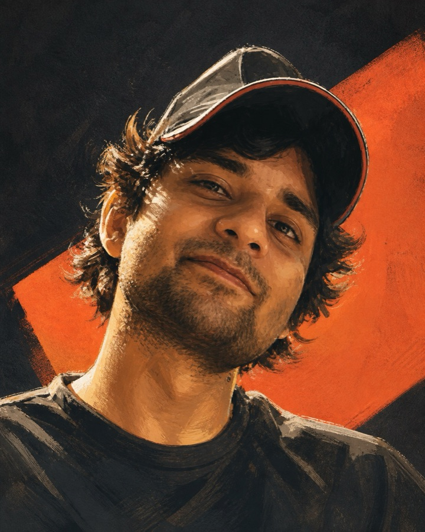
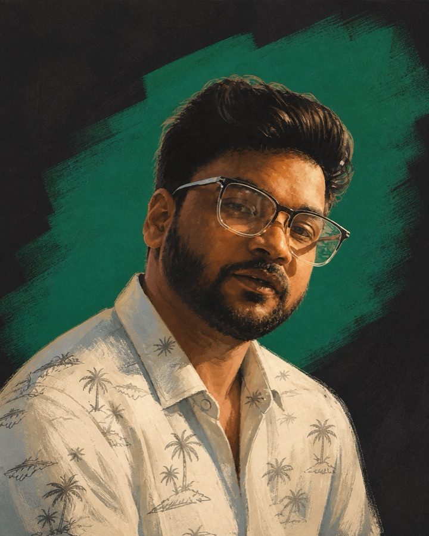
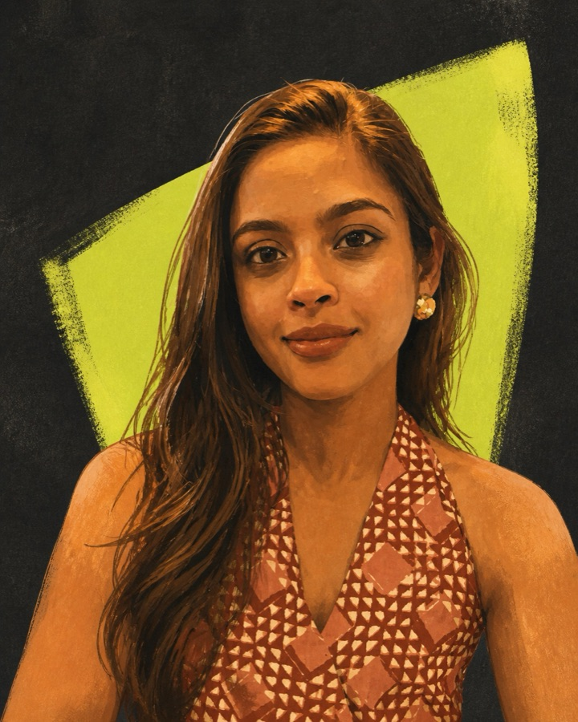
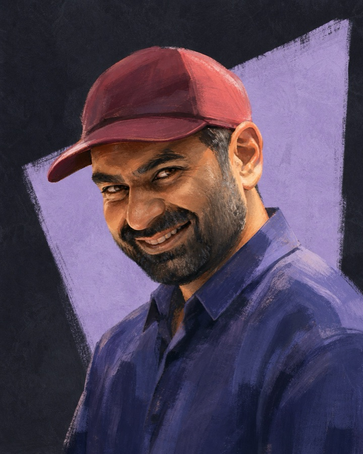
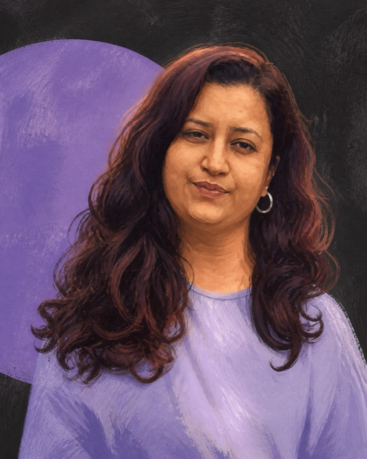
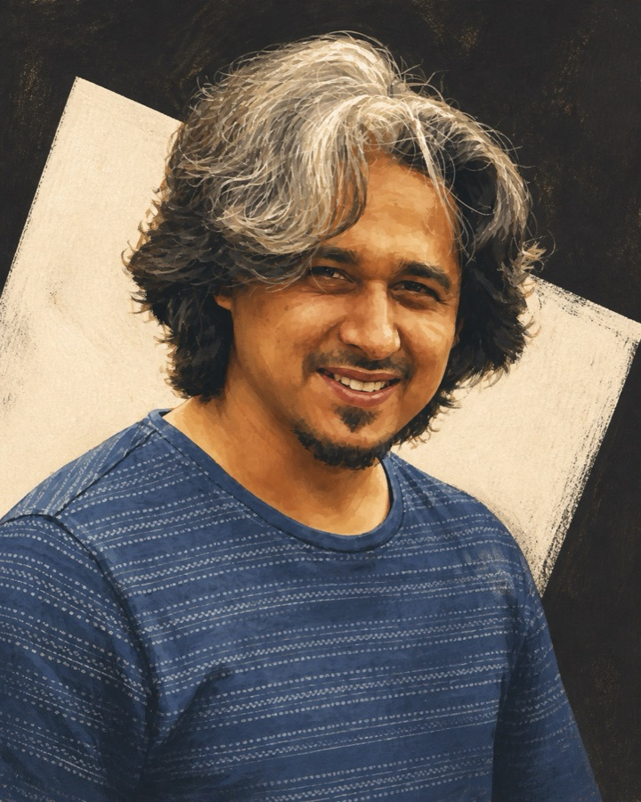
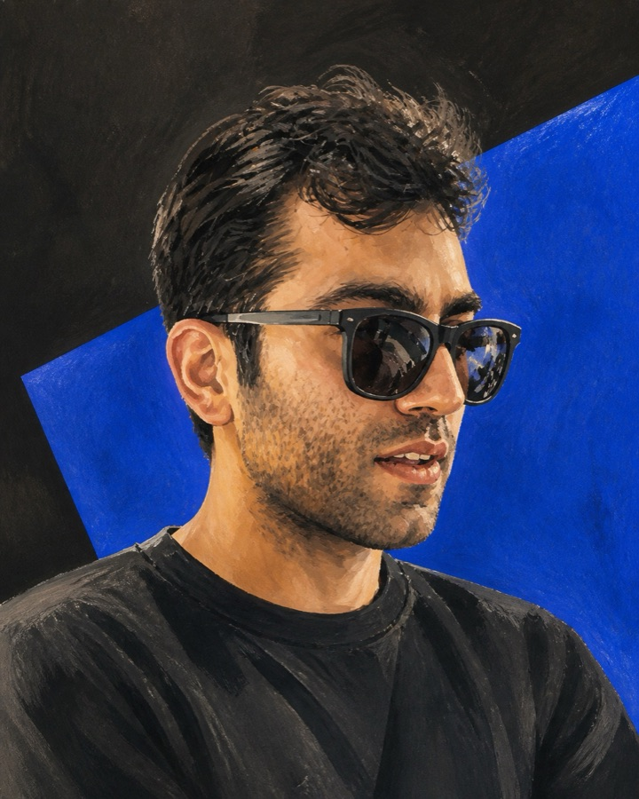

01Aayush
Founder · Product Design
Systems design & mission-critical interfaces
Starts every project in the field, ends it beside the engineers.
Everyone you meet in the first call is on the project until it ships. There is no account layer, no hand-off to a junior team, and nobody translating the problem for someone who never saw it.
Bengaluru · working worldwide
Seven specialists who can follow an idea from screen to street to shelf.
Product, marketing, art direction, industrial design, spatial experience, technology and strategy sit at the same table.
We stay deliberately small. It is how senior hands remain on every interface, object and environment that ships.
Named, reachable, and on the work — not on a slide.

01Founder · Product Design
Systems design & mission-critical interfaces
Starts every project in the field, ends it beside the engineers.

02Co-founder · Marketing Head
Brand, go-to-market strategy & studio growth
Connects the studio’s point of view with the people and problems it can serve best.

03Retail & Spatial Experience
Customer journeys, environments & service touchpoints
Connects what people see, touch and do into one coherent experience.

04Design & Business Strategy
Positioning, product direction & opportunity design
Keeps the creative ambition connected to a viable business move.

05Creative & Art Direction
Visual worlds, campaigns & cross-medium expression
Builds the visual point of view that lets every medium feel related.

06Industrial Design
Physical products, form & prototyping
Turns an idea into something that can be held, tested and manufactured.

07Backend Technology
Systems architecture, APIs & dependable infrastructure
Makes sure the experience has a resilient technical spine behind it.
The person answering your question is the person who drew the screen. No relay, no reinterpretation.
Field work, systems, interaction and front-end live in one team, so nothing is lost between disciplines.
Ammunition handling, clinical records, enforcement law, drone sorties. We read the manual before we open the canvas.
Whoever begins your project finishes it. Context stays in the room instead of in a handover document.
A loose record of workshop tables, field days, shared meals and whatever happened after. The work is serious. The studio needn’t always be.
Moves automatically · drag, swipe, or use the arrows